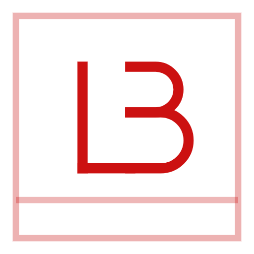

The monogram is an L and a B sharing one vertical stem, inscribed in a square with a hairline rule beneath. Stroke only, no fill — a solid mark would fight the ground it sits on. All PNGs have transparent backgrounds.

| Role | Where it's used | Hex |
|---|---|---|
| Brand red | Light grounds — the site's accent | #cc1111 |
| Brand red (dark UI) | The site's accent in dark mode | #ef2b2b |
| White | Dark grounds, photography | #ffffff |
| Ink | Print, single-colour, fax-grade | #17120e |
| Paper | The site's light background | #f7f4ef |
Which file to use. Prefer lb-monogram.svg wherever
vectors are accepted — it stays crisp at any size and recolours by editing the two
stroke values. Use the PNGs where SVG isn't supported: 1024px for print
and large artwork, 512px for social profiles, 256px and below for favicons, email
signatures and app icons.
Clear space. The mark already carries its own margin inside the
square, so it needs no extra padding to sit correctly — but keep at least the width
of the square's stroke gap clear of other elements on all four sides.
Don't fill the letterforms, add a drop shadow, stretch it
non-uniformly, or place the red version on a dark ground — that's what the white
version is for.